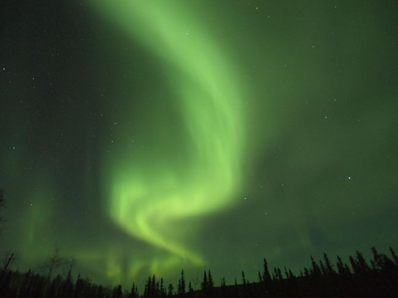
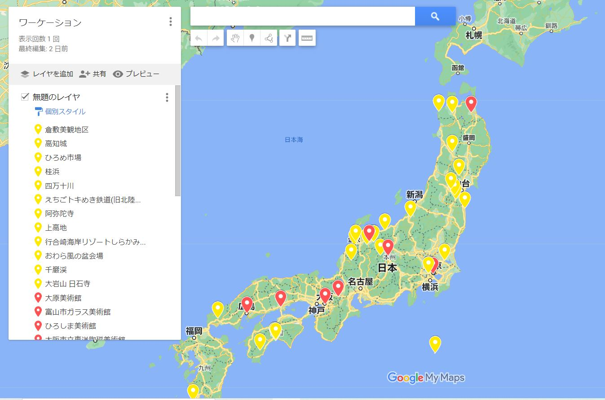

行き先を決めるのは難しい？
どこへ行きますか？
「どこどこに行きたい！」と決まっている旅行はとっても計画しやすいですが 漠然と「どこかへ行きたい」と思っている場合は行き先が決まるまでに悩む事が多いです。 悩みやすい方は常日頃から行き先のアンテナを張って「ここいいなぁ」と思ったらメモしておくのをお勧めします。 私はGoogleMapのマイマップで行きたい所にフラグを追加しています。 こちらは私のマイマップで「現時点での国内の候補地」ですが、とりとめもなくフラグを追加しています。 国内だけでもこんなにあるんだぁと自分でもビックリしてしまいますが、行き先を決める時の参考になります。 場所以外のポイント
「行きたい場所」以外にも、行き先を決める上での重要なポイントはあります。 例えば海外だと ・治安重視なので、とにかく安全な国がいい ・比較的、英語が通じる国がいい ・チップの習慣が無い国がいい などたった3つのポイントでもかなり地域が限られてくると思います。今までの経験より
海外になりますが、今までの「行き先決定」のポイントをまとめてみました。 共通のポイントとしては「日本人が多く観光している」「チップの習慣が無い国」です。 1回目：ベルギー 初めての海外なのでヨーロッパに行ってみたい。 移動が不安なので小さな国を周遊するぐらいにしておきたい。 2回目：オーストラリア(シドニー) オセアニアに行ってみたい。自然豊かな所でのんびりしたい。 3回目：北欧周遊 （ベルゲン～オスロ～ヨーテボリ～コペンハーゲン～ストックホルム～トゥルク～ヘルシンキ） 憧れの北欧に行ってみたい。色んな国を周遊してみたい。 4回目：ニュージーランド(南島周遊) とにかく大自然を満喫したい。「マウントクック」が気になる。 5回目：アラスカ(フェアバンクス) 一生に一度はオーロラ鑑賞してみたい。 6回目：スペイン周遊（マドリード～トレド～コルトバ～グラナダ～バルセロナ） 憧れのスペイン 治安は気になるけど一人旅も慣れてきたのでチャレンジしてみる。 7回目： 8回目： 9回目： 10回目： 11回目： 12回目： 13回目：スポンサーリンク